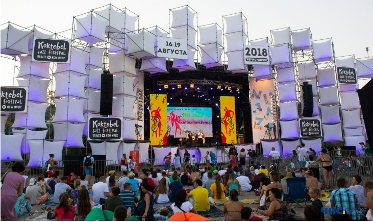
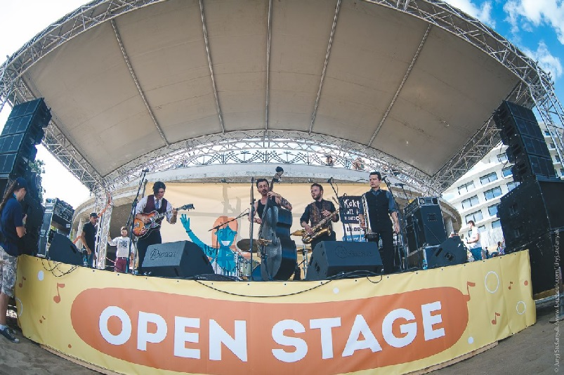
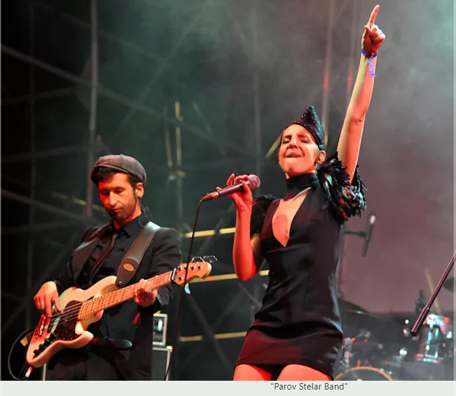

Koktebel Jazz Festival
Найбільший і найатмосферніший в Україні музичний фестиваль у форматі опен-ейр, історія якого триває з 2003 року.
Історія фестивалю
Фестиваль заснований в 2003 році в українському Коктебелі і гучно проводився там до 2014 року.
Після окупації росією Криму український фестиваль де тільки не носило, шукаючи ту єдину і комфортну для усіх локацію. Він проходив на курорті Затока, Чорноморську, в Києві в клубі ЮБК на Трухановому острові та селі Щасливцеве, що на Арбатській стрілці.
Але ми всі прихильники цього чудового фестивалю чекаємо на його повернення додому - в український Коктебель.
Цей абзац Р зроблений, щоб показати каскадність селекторів
Сцени та резиденції фестивалю
Джаз Коктебель - це не тільки унікальна атмосфера, яка розкриває вищі чакри і творчий потенціал людини. Джаз Коктебель - це, в першу чергу, музичний фестиваль, незатьмарена і усвідомлена точка зору на актуальну альтернативну сцену.
Nu Jazz Stage
- головна нічна сцена та масштабний open-air setting і лайн-ап виконавців, які знають, що таке драйв. Музику більшості учасників фестивалю складно назвати джазом, керуючись формальними критеріями енциклопедиста. Однак це перестає мати значення, коли вони "дають джазу" на фестивалі. У них в крові дух джазу, що набагато важливіше!
Open Stage
- денна відкрита сцена з вільним входом. Виступають, як правило, молоді талановиті музаканти, які були відібрані журі фестивалю.
ARTISHOK Residence
- резиденція творчих людей: художників, фотографів, відеооператорів. Тут відбуваються майстер-класи, виставки та різноманітні перфоманси.
Учасники фестивалю
Учасниками та хедлайнерами фестивалю «Джаз Коктебель» в різні роки були: Goran Bregovic, The Cinematic Orchestra, Parov Stelar, Nino Katamadze, «Акваріум», Bonobo, Telepopmusik, Red Snapper, Patrick Wolf, Kadebostany, Submotion Orchestra, Billy's Band, The Tiger Lillies, De Phazz, «ВВ», The Hardkiss, Jamala, «ДахаБраха» та багато інших.
